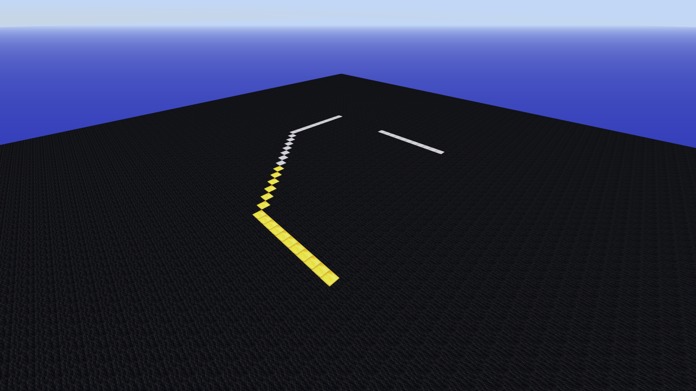
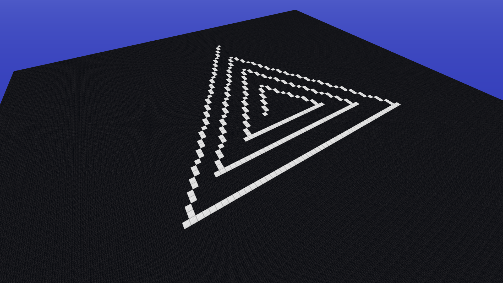
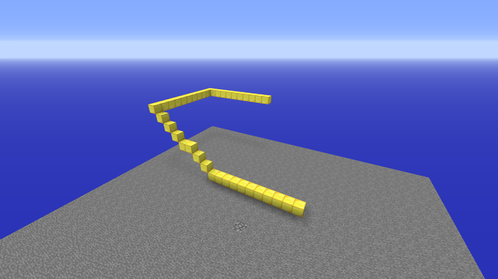

Turtle Programming
Introduction
In this tutorial we will have a look at Turtle Programming. In 1967 a general purpose programming language called LOGO was created. The main highlight of this language was turtle graphics. In turtle graphics we have a robot with a pen which draws on a canvas. We can control this turtle using a few commands. The main commands are :
forward: move the turtle forwardturn: turn the turtlepenUp/penDown: activate/deactivate the turtle's pen
To get a brief understanding of how this works head over here.
While Turtle programming generally refers to a 2-D turtle we have a 3-D version available. In the 3-D version we have three types of turn available for each of the dimensions of the turtle.
pitchyawroll
Let's first start with only operating on a 2-D plane and later we will discuss 3-D.
You need to clear up space for experimentation. Use setBlocks() with PiCraft.AIR to clear up space. If you are on the Java edition then it is suggested that you use New World -> Creative -> World Type: Superflat -> Customize -> Presets -> The Void -> Create New World Then we can setup a canvas for drawing as follows:
using PiCraft
p = getPos()
setBlocks(p .+ (-50, 0, -50), p .+ (50, 0, 50), Block(35, 15))
To initialize the turtle:
t = turtle(pos = p)Since we are only concerned with the 2 dimensions of the plane we only need a single turn function which will be yaw
turn = yaw
move(t, 10)
turn(t, 45) # Note that the angle is in degrees, use `deg2rad(θ)` to convert from radians.
move(t, 10)
t.penBlock = PiCraft.IRON_BLOCK # Change penBlock
move(t, 10)
turn(t, 45)
move(t, 10)
t.penDown = false
turn(t, 90)
move(t, 10)
t.penDown = true
move(t, 10) To reset the canvas and the turtle it can be convenient to define a function
function clrscr(t, p)
setBlocks(p .+ (-50, 0, -50), p .+ (50, 0, 50), Block(35, 15))
t.pos = p
end
clrscr(t, p)Draw a square
move(t, 10)
yaw(t, 90)
move(t, 10)
yaw(t, 90)
move(t, 10)
yaw(t, 90)
move(t, 10)
We can also use a 'for loop' for the same
clrscr(t, p)
for i in 1:4
move(t, 10)
yaw(t, 90)
endSimilarly, we can draw a triangle
Draw a triangle
clrscr(t, p)
for i in 1:3
move(t, 10)
turn(t, 120)
endChallenge: Figure out how to draw a general polygon using a loop
Solution:
function drawPolygon(t::turtle, n::Integer, l::Real)
θ = 180 - 360/n
for i in 1:n
move(t, l)
yaw(t, θ)
end
end
clrscr(t, p)Star
for i in 1:5
move(t, 50)
turn(t, 144)
end
We can also make spirals.
Spiral
clrscr(t, p)
for i in 1:10
move(t, 5*i)
turn(t, 90)
end
clrscr(t, p)
for i in 1:10
move(t, 5 + 5*i)
turn(t, 120)
end
3-D turtle
As mentioned earlier instedad of a single turn command we have 3 commands, namely yaw, pitch and roll.
 In essence we have 3 mutually perpendicular axis on the turtle.
In essence we have 3 mutually perpendicular axis on the turtle.
- Longitudinal(turtle.direction, points forward) : Roll Axis
- Lateral : Pitch Axis
- Vertical(turtle.normal, points downwards) : Yaw Axis
To get the positive rotation direction use the corkscrew rule. 
Curl your right hand's fingers with the thumb pointing outwards like in a thumbs up position. When your thumb points in the axis vector then the curl direction is the positive rotation direction.
We dont need a canvas to experiment with the 3-D turtle. Reset the world as required.
move(t, 10)
pitch(t, 45)
move(t, 10)
pitch(t, -45)
yaw(t, 90)
move(t, 10)
roll(t, 90)
pitch(t, 90)
move(t, 10)
We can use the same concepts of the 2-D turtle to draw in 3-D.
Square inclined at 45 degrees
t = turtle(pos = getPos())
pitch(t, 45)
for i in 1:4
move(t, 10)
yaw(t, 90)
end
Spring
t = turtle(pos = getPos())
R = 20
C = 2*pi*R
for i in 1:720
move(t, C/90)
yaw(t, 7)
pitch(t, 5)
endThis page was generated using Literate.jl.